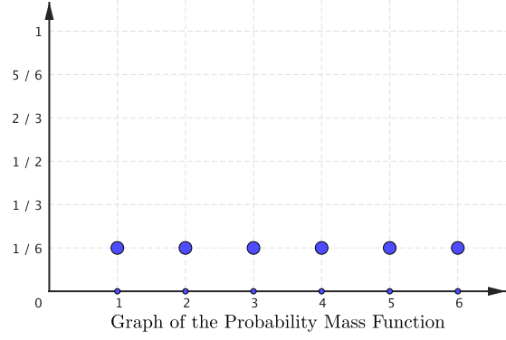
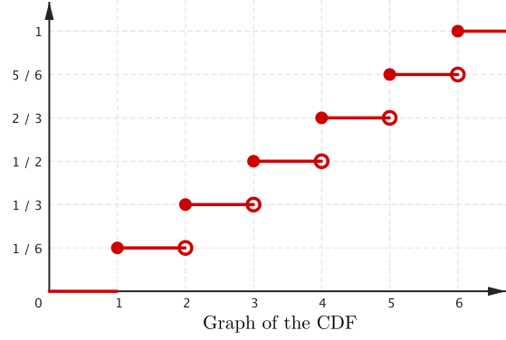
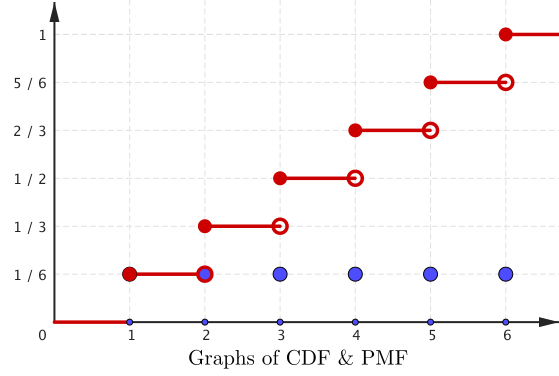
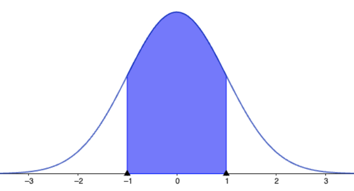
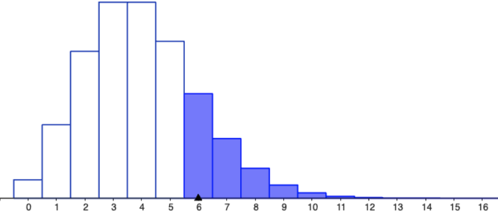
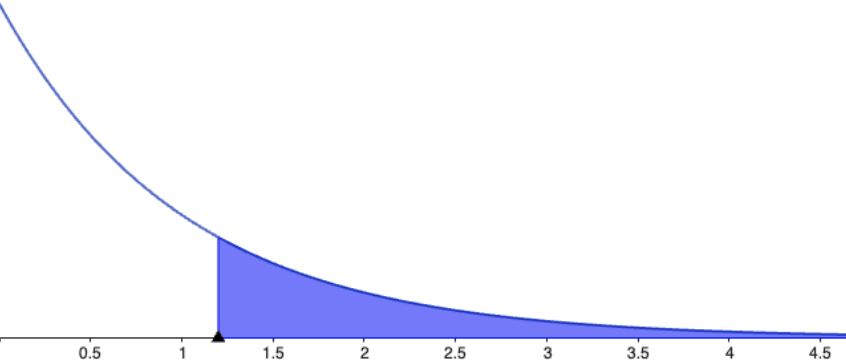

1010ENG/1201SCG
Maths might seem like it's about getting the right answers, but really it's about the process of
discovering, the process of exploration, the journey towards mathematical truth, and how to
regonise when we've found it.
Eugenia Cheng, Is Maths real? (2023)
Week 11 - Probability II
Probability Mass Functions vs Probability Discrete Functions
When we talk about random variables (RVs) in probability, they come in two types:
-
Discrete: Take on specific, separate values (like 0, 1, 2...).
- Continuous: Can take on any value within a range (like any real number between 0 and 6).
Probability Mass Functions vs Probability Discrete Functions
For discrete random variables we use a probability mass function (PMF) written as: \[ f_X(x) = Pr(X = x) \]
This means: "What is the probability that the random variable $X$ is exactly equal to the value $x$?"
Example: Tossing a fai die. 🎲 → $Pr(X=4)=\dfrac{1}{6}.$
To find the probability that $X$ lies in a range (like $2 ≤ X ≤ 4$), we add up the individual probabilities: \[ Pr(2\leq X \leq 4) = f_X(2) + f_X(3) + f_X(4). \]
Probability Mass Functions vs Probability Discrete Functions
For continuous random variables, we use a probability density function (PDF), denoted also by $f_X(x).$
Unlike discrete variables, we cannot calculate probabilities at exact points:
For all real numbers $a$: $\;Pr(X = a) = 0.$
Instead, we calculate probabilities over intervals using integration: \[ Pr(a\lt X\lt b) = \int_a^bf_X(x)\,dx \]
This integral represents the area under the curve of the PDF between $a$ and $b,$ which gives the probability that $X$ lies within that range.
Summary: Discrete vs Continuous Random Variables
| Random Variable Type | Function Name | Notation | Probability for Range |
|---|---|---|---|
| Discrete | PMF (mass) | \( f_X(x) \) | \( \ds \Pr(X \in A) = \sum_{x \in A} f_X(x) \) |
| Continuous | PDF (density) | \( f_X(x) \) | \( \ds\Pr(a < X < b) = \int_a^b f_X(x)\,dx \) |
Example: Throwing a fair die 🎲
The probability that any of one of the six sides of a fair dice lands uppermost when thrown is 1/6. This can be represented be represented mathematically as: \[ P(X = x) = \frac{1}{6}, \hspace{0.3 cm} x = 1, 2, \ldots, 6. \]
- \(X\) represents the random variable describing the side that lands uppermost.
- \(x\) represents the possible values \(X\) can take.
Cumulative Probability Function (CDF)
The cumulative density function (CDF) of a random variable is the probability that the random variable takes a value less than or equal to a specified value, $x$: \[ F(x) = Pr(X \leq x) \]
| $X$ | 1 | 2 | 3 | 4 | 5 | 6 |
| $f_X(x)$ | $\dfrac{1}{6}$ | $\dfrac{1}{6}$ | $\dfrac{1}{6}$ | $\dfrac{1}{6}$ | $\dfrac{1}{6}$ | $\dfrac{1}{6}$ |
| $F(x)$ | $\dfrac{1}{6}$ | $\dfrac{2}{6}$ | $\dfrac{3}{6}$ | $\dfrac{4}{6}$ | $\dfrac{5}{6}$ | $\dfrac{6}{6}$ |
👆 Throwing a die 🎲
Cumulative Probability Function (CDF)
|
$F(x) = Pr(X \leq x)$
👆 Throwing a die 🎲 |



|
Cumulative Probability Function (CDF)
The uniform distribution (Discrete & Continuous)
Checkpoint: Problem 1
Let $X$ denote the random variable that measures the sum of the sides that come up when rolling two fair dice 🎲🎲 simultaneously.
- Write down the sample space of $X$ (what are possible values of $X$?)
- Write down the probability mass function (PMF) of $X,$ in a tabular form.
- Use the PMF in part 2 to write down the cumulative distribution function (CDF) of $X$ in a tabular form.
|
Checkpoint: Problem 1
Let $X$ denote the random variable that measures the sum of the sides that come up when rolling two fair dice 🎲🎲 simultaneously.
- Write down the sample space of $X$ (what are possible values of $X$?)
- Write down the probability mass function (PMF) of $X,$ in a tabular form.
- Use the PMF in part 2 to write down the cumulative distribution function (CDF) of $X$ in a tabular form.
Checkpoint: Problem 2
The continuous random variable $Y$ is uniformly distributed on the interval $(1,2).$
- Write down the probability density function (PDF) of $Y.$
- Sketch the graph of the pdf of $Y.$
- By thinking about the geometry of the PDF, write down a formula for the CDF of $Y$ (you do not have to do integration to work this out). Sketch this CDF.
Checkpoint: Problem 2
The continuous random variable $Y$ is uniformly distributed on the interval $(1,2).$
- Write down the probability density function (PDF) of $Y.$
- Sketch the graph of the pdf of $Y.$
-
By thinking about the geometry of the PDF,
write down a formula for the CDF of $Y$
(you do not have to do integration to work this out). Sketch this CDF.
Bayes' Theorem
Suppose we have two events: $A$ and $B.$ The probability of both occurring simultaneously is
1. $P(A \text{ and } B) = P\left(A \,|\, B\right)P(B)$
2. $P(A \text{ and } B) = P\left(B \,|\, A\right)P(A)$
This implies $\,P\left(A \,|\, B\right)P(B) = P\left(B \,|\, A\right)P(A)$
⭐️ $P\left(A \,|\, B\right)= \dfrac{P\left(B \,|\, A\right)P(A)}{P(B)}$ ⭐️
The Normal Distribution
$ \large f_X(x; \mu, \sigma) =\ds \frac{1}{\sigma \sqrt{2\pi}} e^{-\frac{1}{2} \left( \frac{x - \mu}{\sigma} \right)^2}, $
$x \in \R,\, \mu \in \R, \sigma > 0,$

The Normal Distribution
Areas under the Standard Normal Distribution
Areas under the Standard Normal Distribution
Example 1: $Z \sim N(0,1).$ Find $P(Z\gt 1.52)$
Areas under the Standard Normal Distribution
Example 2: $Z \sim N(0,1).$ Find $P(0 \lt Z \lt 1.52)$
Areas under the Standard Normal Distribution
Exercise: Find $P( Z \lt -1.93)$
Probability distributions
$P(X=k)$ $=$ $^nC_k $ $p^{\,k}$ $(1-p)^{n-k}$
Probability distributions
| Normal distribution: \[ N\left(x; \mu, \sigma^2\right) =\ds \frac{1}{\sigma \sqrt{2\pi}} e^{-\frac{1}{2} \left( \frac{x - \mu}{\sigma} \right)^2} \] |  |
| Poisson distribution: \[ P(Y=y) =\ds \frac{e^{-\lambda }\lambda^y}{y!}, \;y = 0, 1, \ldots, \lambda \gt 0 \] |  |
| Exponential distribution: \[ f_X(x) =\ds \left\{ \begin{array}{rl} \lambda e^{-\lambda x}, & 0\leq x\\ 0, & \text{otherwise} \end{array} \right. \] |  |